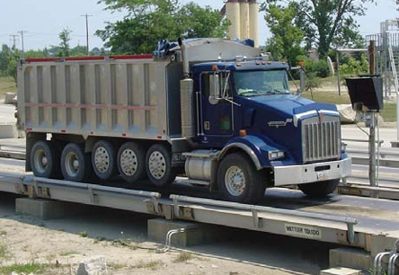

Melampaui promosi penjualan: Desain skala, peringkat, kapasitas, dan pilihan Anda
Jembatan timbang, yang terdiri dari modul dek timbangan, merupakan bagian penting dari timbangan. Dengan beberapa pertimbangan yang cukup mendasar, Anda dapat menetapkan persyaratan untuk jembatan timbang yang dapat bertahan selama bertahun-tahun.
Sebelumnya kami membahas dua pilihan dasar dalam gaya jembatan timbang – dek baja versus dek beton, dan pondasi lubang versus konfigurasi di atas tanah. Di luar pilihan tersebut ada peringkat kapasitas, serta pertimbangan siklus tugas dan siklus hidup.
Beberapa penyedia timbangan memfokuskan presentasi penjualan mereka pada keunggulan jembatan timbang mereka. Perlu diingat bahwa, seperti yang telah kita bahas di bagian sebelumnya, jembatan timbang jarang menjadi sumber biaya kepemilikan yang berkelanjutan. Meskipun memilih jembatan timbang yang sesuai dengan kebutuhan Anda penting, berhati-hatilah agar tidak dijual model jembatan timbang yang lebih mahal daripada yang sebenarnya Anda butuhkan.
Pergerakan Dek Skala
Pergerakan dek timbangan mungkin terdengar seperti hal yang buruk, tetapi sebagian besar timbangan dirancang untuk membiarkan dek bergerak sedikit. Hal ini terjadi karena dua alasan utama:
• Mencegah pengikatan. Jika dek timbangan terikat pada dinding pondasi, timbangan tidak akan menimbang dengan akurat.
• Pemindahan beban. Sebagian besar timbangan dirancang agar dapat memusatkan diri, memindahkan gaya berat pada timbangan ke Load Cells secara vertikal. Jika timbangan tidak memindahkan beban ke Load Cells dengan benar, hasilnya dapat berupa pembebanan yang tidak berada di tengah, yang menyebabkan kesalahan penimbangan.
Timbangan truk biasanya membatasi pergerakan dek dengan penggunaan bemper, batang pemeriksa, atau sistem suspensi. Setiap jenis timbangan memiliki prosedur perawatan rutin untuk memastikan timbangan disesuaikan dengan toleransi yang tepat. Sebagai pemilik timbangan, pastikan pemeriksaan tersebut menjadi bagian dari program perawatan Anda. Mengabaikan sistem tersebut tidak hanya mengakibatkan kesalahan penimbangan, tetapi juga dapat menyebabkan komponen timbangan cepat aus.
Peningkatan Berat Badan
Sebelum membahas peringkat kapasitas, kami perlu menjelaskan peningkatan penimbangan yang digunakan oleh timbangan truk. Ini membantu pembeli nantinya memahami rumus pengaturan timbangan yang diwajibkan secara hukum yang digunakan untuk menentukan kapasitas timbangan.
Penting untuk memahami penambahan berat dan pembagian skala (kadang-kadang disebut resolusi skala). Banyak timbangan truk yang beratnya bertambah 20 kg di lokasi OIML dan 20 lbs di lokasi NTEP. Itu karena peraturan berat dan ukuran di sebagian besar wilayah menentukan jumlah pembagian (unit kapasitas skala) yang harus digunakan oleh timbangan. Untuk timbangan truk, sering kali jumlahnya 3.000 untuk OIML dan 10.000 untuk NTEP.
Hal ini ditentukan dengan menggunakan rumus berikut:
Kapasitas skala / jumlah divisi = ukuran penambahan berat
OIML : Kapasitas timbangan 60.000 kg / 3.000 pembagian timbangan = Ukuran penambahan berat 20 kg
NTEP : Kapasitas timbangan 200.000 lbs. / 10.000 pembagian timbangan = Ukuran penambahan berat 20 lbs.
antara kapasitas timbangan dan ukuran pertambahan berat adalah tetap. Dengan kata lain, jika kapasitas timbangan meningkat, maka ukuran pertambahan berat juga harus meningkat.
Mengapa ini penting? Dengan penambahan berat yang lebih kecil, timbangan memiliki potensi akurasi yang lebih baik karena tidak membulatkan nilai berat dalam interval yang besar. Terminal timbangan biasanya dapat dikonfigurasi untuk menyesuaikan kapasitas maksimum, tetapi harus mengikuti rumus hukum. Beberapa perusahaan timbangan akan menyebutkan bahwa timbangan mereka dapat dikonfigurasi untuk ukuran penambahan kecil, dengan alasan ini sebagai keuntungan. Namun, perlu diingat bahwa ini mungkin tidak dapat diterima untuk aplikasi Anda, berdasarkan rumus ini.
Kapasitas Skala
Untuk membahas kebutuhan kapasitas Anda, Anda perlu mengetahui berapa banyak truk per hari yang akan Anda timbang, jenis dan ukurannya, serta berat maksimumnya. Perhatikan kebutuhan Anda saat ini dan kebutuhan Anda di masa mendatang. Kapasitas timbangan kendaraan dapat dinyatakan dalam berbagai cara.
• Kapasitas Bruto (atau Kapasitas Nominal) – Berat total yang dapat didistribusikan secara merata ke seluruh permukaan jembatan timbang.
• Kapasitas Beban Terkonsentrasi (CLC) – Pernyataan tentang kemampuan timbangan untuk menangani beban dengan memanfaatkan tapak terbatas, yang dimaksudkan untuk mewakili beban yang diterapkan oleh poros ganda.
• Volume Lalu Lintas – Konsentrasi lalu lintas yang dapat ditangani oleh suatu skala.
Mari kita uraikan apa arti masing-masing ukuran ini bagi pembeli skala.
Kapasitas Kotor
Pastikan kapasitas kotor timbangan Anda melebihi berat total truk bermuatan terberat yang akan Anda timbang. Namun, ketahuilah bagaimana perusahaan timbangan membahas kapasitas kotor dalam presentasi penjualan.
Beberapa perusahaan timbangan akan mencantumkan kapasitas yang sangat besar pada timbangan mereka agar tampak lebih unggul dari pesaing mereka. Namun, ingatlah bahwa jika Anda mengonfigurasi timbangan untuk kapasitas ekstra besar, tetapi Anda tidak benar-benar memanfaatkan kapasitas tersebut, peraturan penimbangan tetap mengharuskan ukuran penambahan berat juga ditingkatkan. Hal ini tidak diinginkan karena meningkatkan kebutuhan terminal untuk membulatkan berat ke atas atau ke bawah dalam nilai yang lebih besar.
Beberapa tenaga penjualan akan membahas kapasitas kotor sebagai korelasi terhadap kekuatan. Namun, kapasitas kotor ditentukan oleh rumus yang tidak benar-benar sesuai dengan verifikasi kekuatan.
Bagaimana Kapasitas Kotor Ditentukan?
Kapasitas kotor tidak ditentukan dengan cara yang mungkin dipikirkan oleh beberapa pelanggan. Perusahaan timbangan tidak menguji timbangan dengan cara memuatnya hingga rusak. Kapasitas kotor biasanya didasarkan pada rumus berat dan ukuran standar yang dapat memperhitungkan jumlah dan kapasitas sel beban dalam timbangan, ukuran penambahan berat dan/atau jumlah divisi, jumlah modul dek timbangan, dan peringkat kapasitas beban terkonsentrasi (CLC) modul.
Namun, kapasitas kotor bukanlah ukuran sebenarnya dari kekuatan jembatan timbang. Di dunia nyata, truk tidak mendistribusikan muatannya secara merata di seluruh permukaan jembatan timbang. Truk memusatkan muatan pada asnya, itulah sebabnya, di beberapa wilayah, timbangan truk mungkin juga memiliki CLC.

Ikuti tur video salah satu fasilitas manufaktur skala kendaraan METTLER TOLEDO di www.mt.com/TruckScaleTour
Kapasitas Beban Terpusat (CLC)
CLC adalah spesifikasi yang diwajibkan oleh NIST/NTEP, yang diuraikan dalam Buku Pegangan 44, yang berlaku untuk Amerika Serikat dan wilayah lain yang mengakui persyaratan ini. Batas berat untuk kendaraan jalan raya sering dinyatakan sebagai berat maksimum yang diizinkan untuk poros ganda (dua poros yang diposisikan bersebelahan di area tetap sekitar 2,5 x 1,2 m, atau 8 x 4 kaki). CLC adalah berat poros ganda maksimum yang dimaksudkan yang akan didukung oleh timbangan sebagaimana ditetapkan oleh produsen timbangan.
Bagaimana CLC ditentukan?
Pabrikan timbangan menyatakan nilai CLC yang mereka inginkan untuk model timbangan. Nilai tersebut kemudian diverifikasi dengan uji sederhana menggunakan beban datar yang mewakili nilai maksimum yang diinginkan. Beban tersebut ditempatkan di berbagai lokasi pada timbangan saat masih baru. Biasanya, timbangan tersebut kemudian digunakan untuk jangka waktu yang singkat (30-45 hari), yang selama itu diperlukan untuk melakukan minimal sekitar 300 penimbangan yang tercatat. Timbangan tersebut kemudian diuji lagi untuk melihat apakah hasil uji asli dapat diulang dalam hal akurasi penimbangan. Jika demikian, organisasi bobot dan ukuran memberikan nilai CLC tersebut kepada model timbangan. Pengujian tersebut tidak mengukur tekanan fisik atau kelelahan pada struktur timbangan karena hanya diperiksa dua kali dalam beberapa bulan pertama pemasangan.
Peringkat CLC sering disalahpahami. Peringkat ini sering dikutip oleh penjual sebagai tanda kekuatan timbangan. Meskipun uji CLC bermanfaat dalam beberapa hal, namun bukan merupakan ukuran sebenarnya dari "kekuatan" timbangan. Sebagian besar pembeli timbangan menginginkan timbangan yang "kuat" karena mereka ingin timbangan tersebut bertahan selama mungkin, bahkan dengan penggunaan terus-menerus. Sayangnya, uji CLC ini tidak memprediksi ketahanan timbangan terhadap kelelahan, atau kinerja seiring berjalannya waktu. Sebenarnya, timbangan yang diproduksi dengan buruk sekalipun dapat lulus dengan peringkat CLC yang tinggi.
Berapa banyak CLC yang saya butuhkan?
Jawaban atas pertanyaan ini bergantung pada lokasi Anda dan batas berat legal maksimum yang ditetapkan oleh pemerintah dan/atau otoritas transportasi Anda. Misalnya, di Amerika Serikat, sebagian besar peraturan transportasi negara bagian membatasi gandar tandem hingga maksimum 34.000 lbs. (15.422 kg.). Dalam sebagian besar kasus, Anda memerlukan CLC yang dirancang untuk memenuhi atau melampaui nilai tersebut. Namun, Anda jarang akan menemukan opsi timbangan yang tidak menyediakan CLC yang memadai untuk area Anda. Bagi perusahaan untuk menawarkan timbangan yang tidak memenuhi peringkat lokal tidak masuk akal.
Safety factor
Timbangan truk dengan peringkat CLC 30 ton menawarkan lebih dari 150% beban CLC aktual yang akan dihadapi timbangan tersebut, sehingga memberikan faktor keamanan yang diperlukan untuk beban jalan raya yang legal.
Katakanlah Anda sedang mengevaluasi dua timbangan truk—satu memiliki peringkat CLC 80.000 lbs. (36.287 kg.), dan yang lainnya memiliki peringkat CLC 100.000 lbs. (45.359 kg.). Keduanya menawarkan lebih dari dua kali peringkat CLC yang dibutuhkan untuk menimbang berat maksimum yang diizinkan secara hukum untuk truk jalan raya di Amerika Serikat. Jadi, apakah timbangan dengan peringkat CLC yang lebih tinggi lebih baik daripada yang lainnya? Tidak. CLC sendiri merupakan cara perbandingan yang buruk karena tidak mencerminkan kualitas atau kinerja timbangan dari waktu ke waktu.
Catatan: Dalam beberapa tahun terakhir, beberapa produsen timbangan telah mulai mensertifikasi timbangan mereka untuk bobot CLC yang sangat besar sehingga mereka dapat menggunakan angka ini dalam diskusi penjualan. Kenyataannya, banyak lokasi telah menggunakan timbangan truk lama yang diberi nilai CLC 60.000 atau bahkan 45.000 lbs. selama 20 tahun atau lebih tanpa masalah jembatan timbang. Hal ini, dikombinasikan dengan sifat terbatas dari uji CLC, memudahkan untuk melihat bahwa CLC yang lebih tinggi tidak berarti masa pakai timbangan yang lebih lama.
Pengujian Siklus Hidup
Untuk mengevaluasi keawetan timbangan selama bertahun-tahun penggunaan konstan, pengujian siklus hidup harus dilakukan. Pengujian siklus hidup melibatkan pemuatan dan pembongkaran struktur timbangan secara berulang untuk meniru tekanan yang akan dialaminya selama masa pakainya. Itu dapat melibatkan lebih dari dua juta siklus dinamis. Meskipun beberapa pembuat timbangan akan mengklaim bahwa timbangan mereka "dirancang" untuk menangani dua juta siklus, hanya sedikit yang dapat mengatakan bahwa timbangan mereka "diuji" hingga dua juta siklus. Pengujian fisik tersebut dapat mahal dan memakan waktu, itulah sebabnya banyak pembuat timbangan truk tidak melakukannya.
Tanyakan kepada calon pemasok timbangan Anda tentang pengujian siklus hidup yang mereka lakukan. Beberapa tenaga penjualan hanya akan menunjuk pada verifikasi CLC dan tidak lebih. Ingat, peringkat CLC hanyalah sebagian kecil dari keseluruhan cerita. Pengujian CLC memverifikasi kinerja setelah 300 siklus penimbangan. Itu adalah sebagian kecil dari jumlah total penimbangan yang seharusnya dilakukan timbangan truk selama masa pakainya.
Mesin uji siklus hidup modul jembatan timbang yang digunakan oleh METTLER TOLEDO meniru gaya truk yang melaju di atas timbangan.
Video: Pengujian Siklus Hidup METTLER TOLEDO melakukan pengujian siklus hidup dengan mesin uji yang dirancang khusus yang secara langsung mensimulasikan pembebanan gandar tandem. Pengujian tegangan percepatan masa pakai di dunia nyata ini menggunakan sejumlah sensor yang dipasang dan/atau tertanam ke dalam struktur untuk memberikan pembacaan tegangan terukur yang sebenarnya. Data ini, dikombinasikan dengan analisis elemen hingga berbasis komputer, telah terbukti menjadi cara yang efektif untuk mengevaluasi desain dan konstruksi timbangan untuk ketahanan dan keawetannya. Tonton video yang menyoroti pengujian siklus hidup di www.mt.com/weighbridgetesting www.mt.com/weighbridgetesting
Defleksi
Semua jembatan timbang akan membelok (membengkok) saat beban diletakkan di atasnya. Banyak timbangan akan menyatakan rasio pembelokan sebagai ukuran pergerakan ini. Jadi, bagaimana pembelokan memengaruhi timbangan?
Perusahaan timbangan mencatat tingkat defleksi pada material mereka dan menggunakannya sebagai pesan penjualan untuk meyakinkan pelanggan bahwa jembatan timbang yang lebih kaku merupakan suatu keuntungan. Pada kenyataannya, semua jembatan timbang mengalami defleksi, dan seberapa besar jembatan timbang harus mengalami defleksi bergantung pada bagaimana jembatan tersebut dirancang untuk mendistribusikan berat secara efektif. Oleh karena itu, membandingkan tingkat defleksi antara timbangan dengan desain yang berbeda bukanlah evaluasi yang efektif.
Kunci dari struktur timbangan truk yang dirancang dengan baik adalah seberapa baik timbangan tersebut mendistribusikan beban ke seluruh permukaannya. Seperti halnya CLC, beberapa orang salah mengartikan defleksi sebagai tanda kekuatan jembatan timbang. Tekanan yang disebabkan oleh defleksi bukanlah faktor kritis selama jembatan timbang tidak memiliki las atau titik lemah lainnya di area dengan tekanan tinggi. Jika jembatan timbang terlalu kaku, tekanan dari beban berulang dapat ditransfer ke titik lemah, yang menyebabkannya rusak.
Bagaimana defleksi akan memengaruhi desain timbangan paling baik dievaluasi dengan pengujian siklus hidup yang tepat. Seperti yang telah kita bahas sebelumnya, pengujian siklus hidup akan mereplikasi tekanan dan potensi kelelahan yang akan dihadapi timbangan dari waktu ke waktu. Jika timbangan dirancang dengan tepat, bahkan area dengan tekanan tinggi akan mendistribusikan beban secara efektif, memastikan masa pakai timbangan yang panjang dan pembacaan berat yang akurat.
Saat mengevaluasi jembatan timbang untuk kekuatan, carilah desain yang telah diuji secara menyeluruh dan memenuhi harapan siklus hidup untuk jenis beban yang akan ditimbang. Pengujian tersebut memberikan bukti yang lebih komprehensif tentang efektivitas desain dan pembuatan timbangan.
Siklus Tugas
Tidak semua lokasi menggunakan timbangan truk mereka dengan cara yang sama. Bagi perusahaan agregat, dalam sehari bisa lebih dari 100 truk melewati timbangannya, sementara perusahaan besi tua kecil di kota yang sama mungkin hanya memiliki 15 atau 20 truk selama periode yang sama. Meskipun timbangan sama pentingnya bagi kedua pengguna sebagai sarana untuk mendapatkan penghasilan, operasi agregat akan menerapkan lalu lintas lima kali lebih banyak ke timbangan mereka dalam satu hari dibandingkan perusahaan besi tua.
Inilah mengapa penting untuk mempertimbangkan jumlah truk yang akan Anda timbang saat memilih timbangan truk. Pemasok timbangan Anda dapat membantu Anda menentukan model terbaik dari lini produk mereka untuk memenuhi kebutuhan kapasitas Anda, serta siklus kerja yang Anda harapkan. Menemukan keseimbangan itu berarti menemukan timbangan yang dapat memenuhi kebutuhan Anda dengan nyaman sekaligus menghindari investasi pada timbangan yang jauh melebihi kebutuhan Anda.
Sulit untuk menyebutkan secara spesifik dalam hal kinerja siklus tugas, karena desain jembatan timbang dapat bervariasi dari satu produsen ke produsen lainnya. Namun, jembatan timbang dek baja, misalnya, dapat dilengkapi dengan baja yang lebih tebal berdasarkan kebutuhan siklus tugas. Demikian pula, timbangan dek beton dapat menambah ketebalan beton atau jumlah tulangan untuk mengakomodasi siklus tugas berat yang diharapkan.
Contoh tugas berikut mengasumsikan bahwa lokasi memiliki satu timbangan untuk semua lalu lintas truk. Jika beberapa timbangan digunakan di lokasi, volume lalu lintas per timbangan harus dipertimbangkan. Jumlah bobot mewakili truk bermuatan.
Contoh 1
Tugas Ringan, Volume lalu lintas ringan dengan kendaraan pada atau di bawah batas berat as jalan yang sah 0-50 truk per hari
Tugas Sedang, Lalu lintas kendaraan yang stabil (tetapi tidak konstan) pada atau di bawah batas berat gandar jalan raya yang sah 50-100 truk per hari
Tugas Berat, Lalu lintas kendaraan yang konstan pada batas berat as jalan raya maksimum yang diizinkan 100-350 truk per hari
Contoh 2
Tugas Ringan, Volume lalu lintas sedang dengan kendaraan jauh di bawah batas berat gandar jalan raya yang sah 50-100 truk per hari
Tugas Sedang,Lalu lintas kendaraan yang konstan jauh di bawah batas berat gandar jalan yang sah 100-350 truk per hari
Tugas Berat, Lalu lintas kendaraan ringan atau sedang yang melampaui batas berat gandar jalan yang sah (seperti kendaraan penggalian berat) 0-50 truk per hari
Pertimbangkan jumlah lalu lintas truk yang diproses situs saat memilih skala truk yang tepat